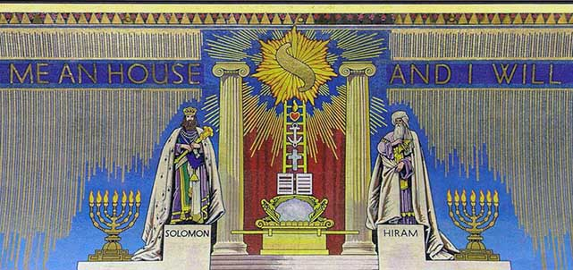

Useful Links
Blockley Lodge
If you are involved in performing ceremonies at Blockley, here is our Ritual. You will find each ceremony laid out in its entirety, complete with clear diagrams illustrating the floor work and more.
Guides for New Members
A useful guide from the Province regarding Freemasonry in general
If you have just been initiated, here is a useful guide from the Province for your perusal.
If you have just taken your second degree, here is a useful guide from the Province for your perusal.
If you have just taken your third degree, here is a useful guide from the Province for your perusal. You might also like to take a look at this guide to the Royal Arch.
United Grand Lodge of England
The Masonic Charitable Foundation, or MCF, is the Freemasons' Charity. Look here to find out what they do, to get support or apply for charitable grants, and help support their work.
The Book Of Constitutions contains all of the rules that govern our Organisation. You will also find here a link to the Information for the Guidance of Members of the Craft
The Province of Oxfordshire
Here is the public website for The Masonic Province of Oxfordshire.
Members' website for The Masonic Province of Oxfordshire
Learning and Development
Do you know someone that is interested in Freemasonry? You might like to share this link with them. Lots of information for potential members.
Solomon is a virtual learning environment designed to support a broader programme of learning and development within Lodges and Chapters, and is a veritable mine of useful and interesting information.
bUGLE provides tools for the future; UGLE strategy, information for Centres, Learning, information for Charity Stewards and Almoners, Communications, and much more.